| Title | Av_rat | Watches | Likes | R_0.5 | R_1 | R_1.5 | R_2 | R_2.5 | R_3 | R_3.5 | R_4 | R_4.5 | R_5 | Ratings |
|---|---|---|---|---|---|---|---|---|---|---|---|---|---|---|
| Interstellar | 4.41 | 5044987 | 0.479 | 0.001 | 0.004 | 0.002 | 0.013 | 0.010 | 0.055 | 0.055 | 0.197 | 0.143 | 0.520 | 0.734 |
| Fight Club | 4.27 | 5059722 | 0.460 | 0.001 | 0.004 | 0.002 | 0.012 | 0.010 | 0.068 | 0.074 | 0.279 | 0.160 | 0.389 | 0.708 |
| Joker | 3.84 | 4952400 | 0.390 | 0.004 | 0.010 | 0.006 | 0.034 | 0.029 | 0.135 | 0.122 | 0.325 | 0.112 | 0.223 | 0.702 |
| Parasite | 4.55 | 5015041 | 0.545 | 0.001 | 0.002 | 0.001 | 0.006 | 0.005 | 0.035 | 0.041 | 0.211 | 0.169 | 0.529 | 0.758 |
| Barbie | 3.78 | 5195503 | 0.412 | 0.005 | 0.011 | 0.007 | 0.038 | 0.037 | 0.154 | 0.136 | 0.280 | 0.100 | 0.231 | 0.787 |
Letterboxd analysis
Introduction
This project is dedicated to analysis of films on the site Letterboxd and users’ behaviour when rating films. There were two data sets used first (Garanin 2024) and second (Ky13_38 2025). “First” data set consists of multiple data sets, that contains full film information such as title, release year, genres, studios. “Second” data set contains detailed information about user’s ratings. The goal of the analysis is to determine trends in film industries, and correlation between users’ behaviour and film quality.
Theory
Letterboxd is a popular social platform for film enthusiasts, where you can share your opinions or use it as a list of watched films with your ratings. We will be looking at five main components: average rating, amount of film views, the percentage of people who rated/liked the film out of the total number of views, percentage of every possible rating out of total amount of ratings.
A sample of data set is shown in Table 1.
We use Spearman’s Rank Correlation to measure monotonic relationship between two continuous variables because our monotonic relationship can be non-linear.
The equation can be written as shown in Equation 1:
\[ \rho = 1 - {6\sum{d^2}\over{n(n^2-1)}} \tag{1}\] Where:
- ρ: Spearman’s Rank Correlation
- d: difference between ranks of corresponding values
- n: total number of observation
Analysis
Before the analysis starts, we need to clean our data before loading it into our session, remove incomplete records and calculate further required percentages. There is some TV series, so we filter them by using maximum length of a film as a 4 hours. For the releases we interested in data from USA, because USA is a biggest market for films.
library(dplyr)
movies <- read.csv("../movies.csv", header = TRUE) |>
filter(!is.na(date), !is.na(rating), minute <= 240)
studios <- read.csv("../studios.csv", header = TRUE)
releases <- read.csv("../releases.csv", header = TRUE) |>
filter(country == "USA") |>
filter(type == "Theatrical" | type == "Digital") |>
select(-date)|>
distinct()|>
rename(age_rating = rating)
genres <- read.csv("../genres.csv", header = TRUE)
countries <- read.csv("../countries.csv", header = TRUE)
letterboxd <- read.csv(file = "../Movie_Data_File.csv", header = TRUE) |>
select(Film_title, Average_rating, Watches,Likes,R_0.5,R_1,R_1.5,R_2,R_2.5,
R_3,R_3.5,R_4,R_4.5,R_5,Total_ratings, Original_language) |>
filter(!is.na(Average_rating)) |>
rename(title = Film_title)|>
mutate(R_0.5 = R_0.5 / Total_ratings, R_1 = R_1 / Total_ratings,
R_1.5 = R_1.5 / Total_ratings, R_2 = R_2 / Total_ratings,
R_2.5 = R_2.5 / Total_ratings, R_3 = R_3 / Total_ratings,
R_3.5 = R_3.5 / Total_ratings, R_4 = R_4 / Total_ratings,
R_4.5 = R_4.5 / Total_ratings, R_5 = R_5 / Total_ratings,
Likes = Likes / Watches, Total_ratings = Total_ratings / Watches)Analysis starts with determining of possible trend in length of the films throughout the years. As shown in Figure 1, we can clearly see upward tendency, there is a positive linear trend over time, but because of a slow growth it is a weak trend. As shown in Figure 2, the vast majority of films are approximately of a 100 minute runtime, with a gentler slope on a side of longer films.
library(ggplot2)
movies|>
ggplot() + aes(x = date, y = minute) +
geom_boxplot(aes(group = date), outlier.alpha = 0.1, outlier.shape = 1) +
labs(
x = "Year",
y = "Length",
) +
geom_smooth(method = "lm", formula = y ~ x, se = FALSE, size = 0.4) +
theme(axis.text.x = element_text(angle = 90, size = 7)) +
scale_x_continuous(breaks = seq(1904, 2024, by = 4), expand = c(0,1))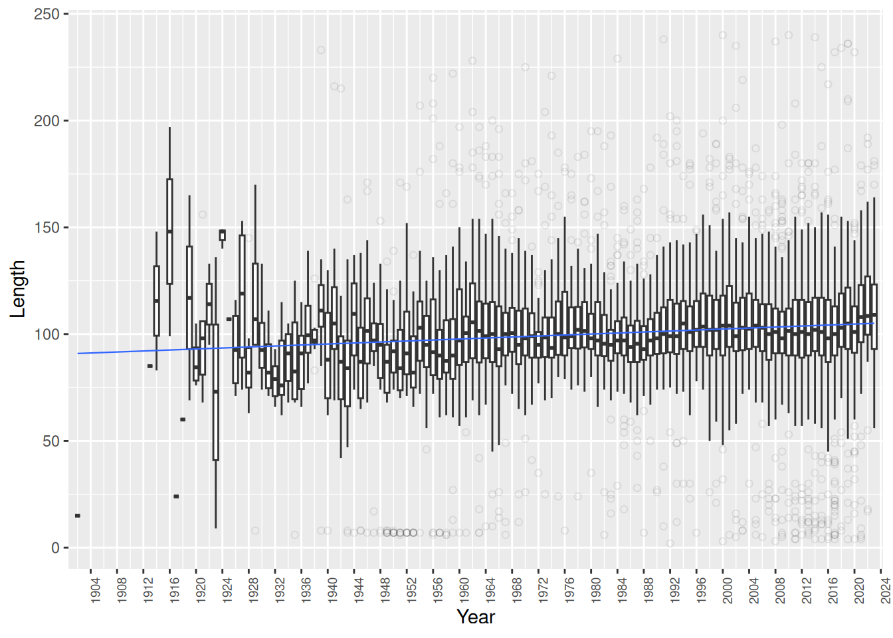
library(ggplot2)
movies|>
ggplot() +
aes(x = minute) +
geom_histogram(binwidth = 4, color = "white", fill = "darkblue") +
labs(
x = "Length",
y = "Count"
)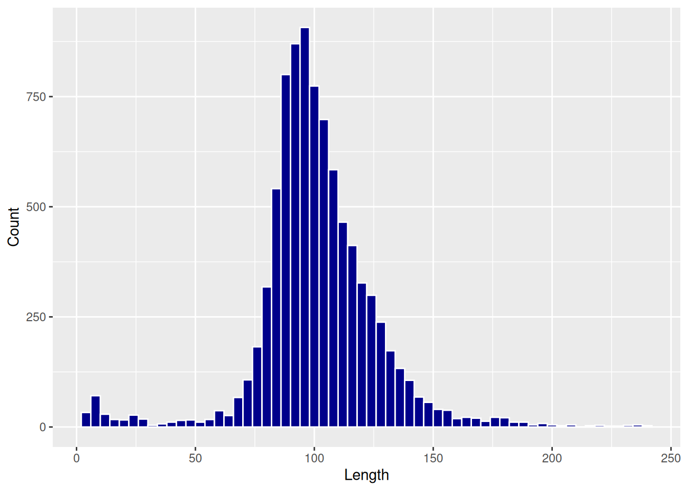
Next step is to analyse amount of film released each year. Figure 3 shows sharp decline of films after a year 2020. It corresponds with a start of a COVID-19 pandemic, that forced cinemas to close on the period of pandemic. As can be seen, this has led to a fall in the number of films released each year, although not to zero.
ggplot(movies) +
aes(x = date) +
geom_bar(color = "white", fill = "darkblue") +
theme(axis.text.x = element_text(angle = 90, size = 7)) +
scale_x_continuous(breaks = seq(1904, 2024, by = 4), expand = c(0,1)) +
labs(
x = "Year",
y = "Count"
)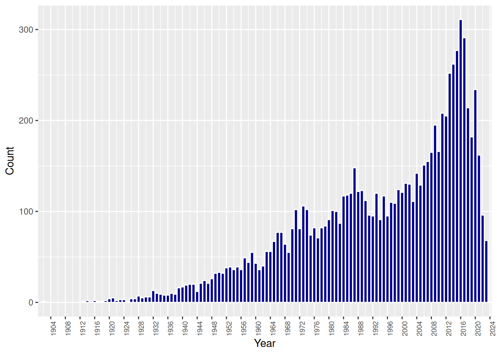
As shown in Figure 4, at the start of pandemic in the 2020 as a result of closed cinemas a lot of films were released in digital format. 2013 was a year when Netflix, the biggest streaming service, started to make exclusive shows, that were released only digitally. After 2013 we can see a rapid growth of digital only releases that corresponded with a decline of theatrical only releases.
only_digital_releases <- inner_join(movies, releases, by = "id") |>
group_by(name, date) |>
filter(date >= 2008)|>
filter(any(type == "Digital") && all(type != "Theatrical")) |>
ungroup()|>
group_by(date)|>
summarise(digital = n())
all_movies <- movies|>
filter(date >= 2008)|>
group_by(date) |>
summarize(all = n())
only_theatrical_releases <- inner_join(only_digital_releases,
all_movies, by = "date") |>
mutate(theatrical = all - digital) |>
select(date, theatrical)
ggplot() + geom_line(data = only_digital_releases,
aes(x = date, y = digital, color = "a")) +
geom_line(data = only_theatrical_releases,
aes(x = date, y = theatrical, color = "b")) +
geom_line(data = all_movies, aes(x = date, y = all, color = "c")) +
scale_color_manual(
values = c("red", "yellow", "blue"),
labels = c("Digital only", "Theatrical", "Any")
) +
labs(
x = "Year",
y = "Number of films",
color = "Type of release"
) +
scale_x_continuous(breaks = seq(2008, 2024, by = 2)) +
geom_vline(xintercept=2013, linetype='dashed', color='blue') +
theme() 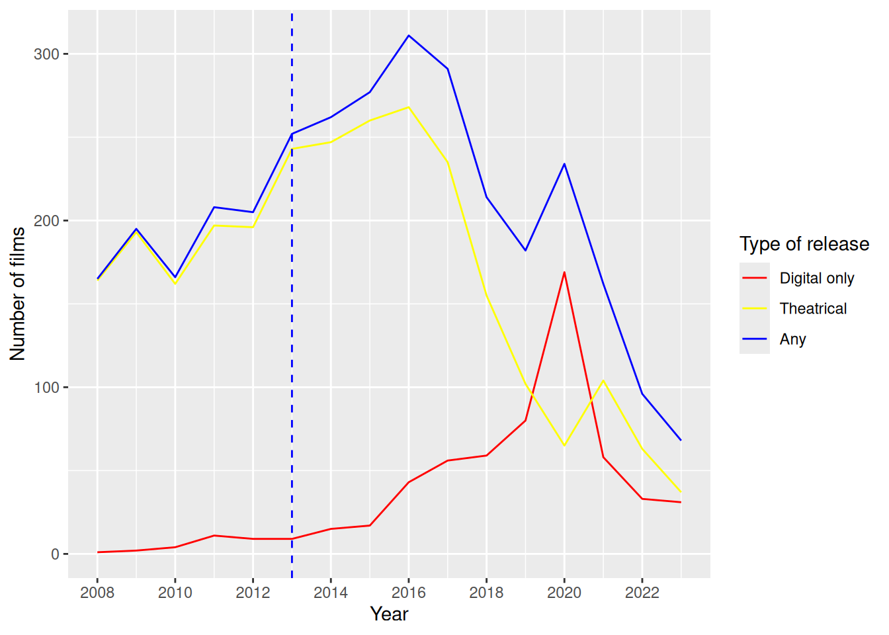
The next part of the analysis focuses on genre popularity in different circumstances. Figure 5 shows popularity of genres in all films, digital and theatrical. It can be determined that top 4 genres are Drama, Comedy, Action and Thriller. Figure 6 shows genre popularity in digital only movies. As can be seen, top 3 is the same, but forth place is taken by a Music.
library(plotly)
inner_join(movies, genres, by = "id") |>
filter(date >= 2012)|>
group_by(date, genre)|>
summarise(n = n()) |>
ggplot() +
aes(x = date, y = n, group = genre) +
geom_line(aes(color = genre)) +
geom_point(size = 1, aes(color = genre)) +
scale_x_continuous(breaks = seq(2012, 2024, by = 2)) +
labs(
x = "Year",
y = "Number of films",
color = "Genre"
) +
guides(color=guide_legend(ncol=2))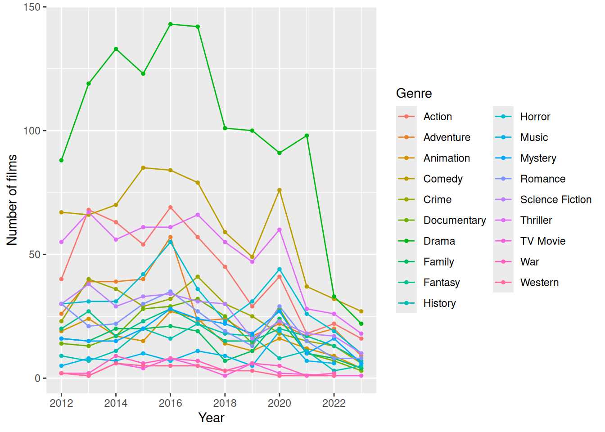
movies_releases_grouped <- inner_join(movies, releases, by = "id") |>
group_by(name, date) |>
filter(date > 2012)|>
filter(any(type == "Digital") && all(type != "Theatrical")) |>
ungroup()|>
inner_join(genres, by = "id")|>
group_by(date, genre)|>
summarise(n = n())
ggplot(movies_releases_grouped) +
aes(x = date, y = n, group = genre) +
geom_line(aes(color = genre)) +
geom_point(size = 1, aes(color = genre)) +
labs(
x = "Year",
y = "Number of films",
color = "Genre"
) +
guides(color=guide_legend(ncol=2)) +
scale_x_continuous(breaks = seq(2012, 2024, by = 2))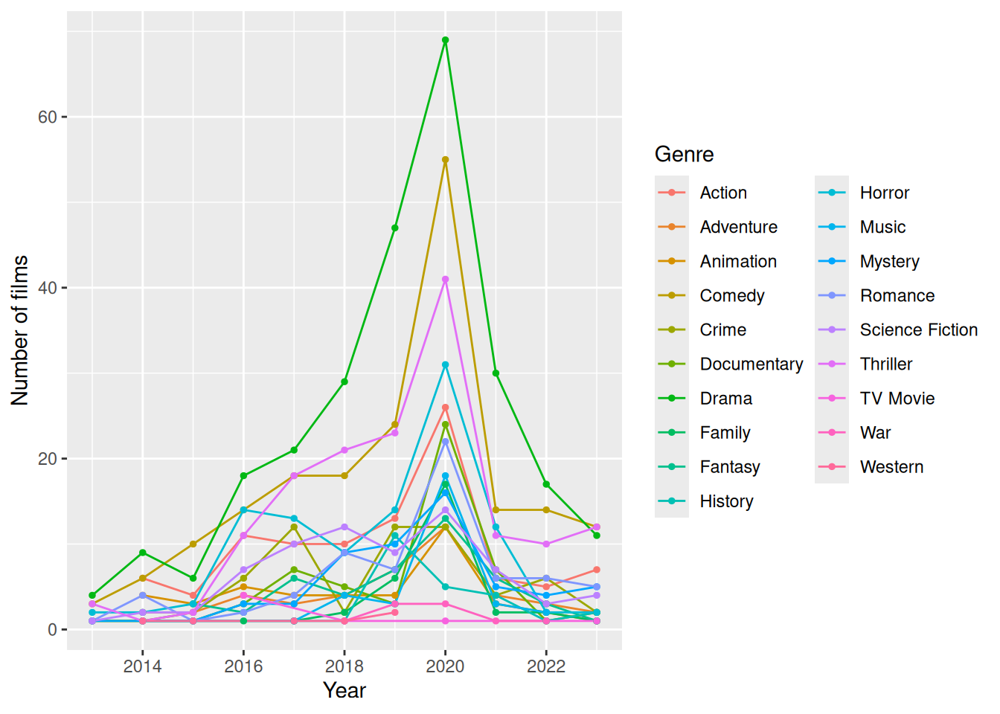
Then we analyse the popularity of a particular film genre produced by different countries. In this data set there is no information about every country, but only the majority of them. As shown in Figure 7, the most popular genre is still a Drama, but a lot of countries have different most produced genre.
library(maps)
library(countrycode)
dat_for_map <- inner_join(genres, countries, by = "id") |>
mutate(country = countrycode::countrycode(
sourcevar = country, origin = 'country.name', destination = 'country.name')
) |>
group_by(genre, country)|>
summarise(n = n())|>
ungroup()|>
group_by(country)|>
slice(which.max(n))
dat_world_map <- map_data("world") |>
mutate(region = countrycode::countrycode(
sourcevar = region, origin = 'country.name',destination = 'country.name')
)
full_join(x = dat_for_map, y = dat_world_map,
by = c("country" = "region"),
multiple = "all", relationship = "many-to-many") |>
ggplot(mapping = aes(x = long, y = lat, group = group)) +
geom_polygon(mapping = aes(fill = genre)) +
coord_fixed(ratio = 1.3) +
labs(fill = "Genre") +
theme_void()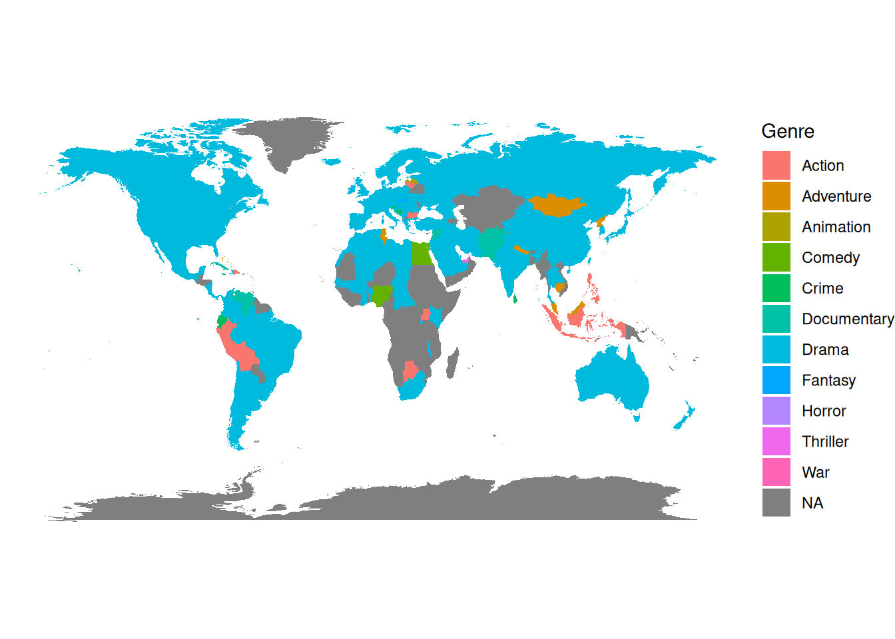
Also an important parameter is a original language of a film. On Figure 8 information is shown about top 5 languages and languages that are lower than top 5 is collected in group Other. It is clear that English is a dominant language for films, but also that 1/6 of film languages are from other countries.
letterboxd |>
select(Original_language) |>
group_by(Original_language) |>
count(Original_language)|>
arrange(desc(n))|>
group_by(Original_language = factor(c(Original_language[1:5],
rep("Other", n() - 5)),
levels = c(Original_language[1:5], "Other"))) |>
tally(n) |>
ggplot(aes(x = "", y = n, fill = Original_language)) +
geom_col(color = "black") +
geom_text(aes(x = 1.6, label = n),
position = position_stack(vjust = 0.5)) +
coord_polar(theta = "y") +
theme_void() +
labs(fill = "Original Language")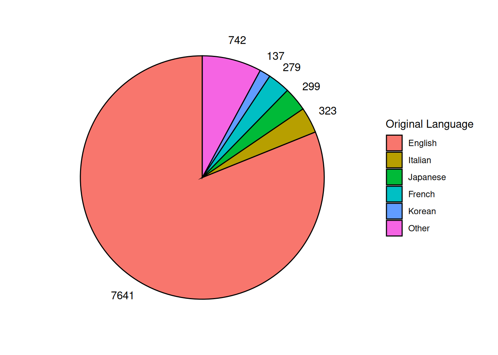
Next step in analysis is finding ten studious with most released movies, and determining is there are any trend with ratings of the movies throughout years. As shown on Figure 9 all top ten studious have negative linear trend over time. So mean rating of films from big studious is decreasing more and more.
top10studios <- studios|>
group_by(studio)|>
summarise(n_movies = n())|>
arrange(desc(n_movies))|>
slice_head(n = 10)
movies_studios <- inner_join(movies, studios, by = "id") |>
filter(studio %in% pull(top10studios, studio)) |>
group_by(date, studio)|>
summarise(mean_rating = mean(rating))
ggplot(movies_studios) +
aes(x = date, y = mean_rating) +
geom_line(aes(color = studio)) +
facet_wrap(vars(studio), nrow = 5) +
geom_smooth(method = "lm", size = 0.2, formula = y ~ x) +
guides(color = "none") +
labs(
x = "Year",
y = "Mean Rating"
)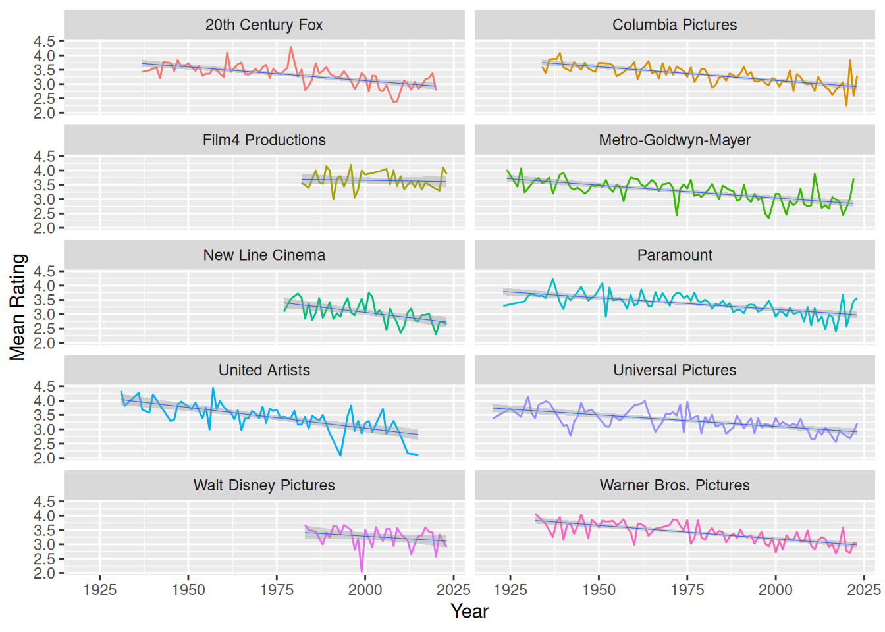
In the last part of analysis, correlation between likes(or total rating) and percentage of each rating was determined by using Spearman’s Rank Correlation. In Table 2 and Figure 10, it can be seen that correlation between percentage of each rating and percentage of likes is pretty strong. It can be interpreted that if movie is good, than it will lead to more likes, and vice versa. And conversely, in Table 2 and Figure 11 it can be seen that total rating doesn’t have strong relationship with percentage of each rating.
library(knitr)
c1 <- cor(letterboxd[,5:14], letterboxd[,4], method = "spearman")
c2 <- cor(letterboxd[,5:14], letterboxd[,15], method = "spearman")
rownames(c1) <- NULL
rownames(c2) <- NULL
table <- data.frame(
Rating = c("R_0.5","R_1","R_1.5","R_2","R_2.5",
"R_3","R_3.5","R_4","R_4.5","R_5"),
Likes = c1[,1],
Total_Rating = c2[,1])
kable(table, align="l")| Rating | Likes | Total_Rating |
|---|---|---|
| R_0.5 | -0.6897133 | -0.1523546 |
| R_1 | -0.7600800 | -0.1685962 |
| R_1.5 | -0.7895497 | -0.1226214 |
| R_2 | -0.8269306 | -0.1609333 |
| R_2.5 | -0.7640346 | -0.0910750 |
| R_3 | -0.4386904 | -0.1309686 |
| R_3.5 | 0.3983095 | 0.1562181 |
| R_4 | 0.8149455 | 0.1226216 |
| R_4.5 | 0.8389142 | 0.1237624 |
| R_5 | 0.7425139 | -0.1014434 |
library(patchwork)
plots <- list()
counter <- 0
for (i in c("R_0.5","R_1","R_1.5","R_2","R_2.5",
"R_3","R_3.5","R_4","R_4.5","R_5"))
{
counter <- counter + 1
plots[[counter]] <- ggplot(letterboxd) +
aes(Likes, .data[[i]]) +
geom_point(alpha = 0.1, color = "red")
}
wrap_plots(plots, ncol = 3)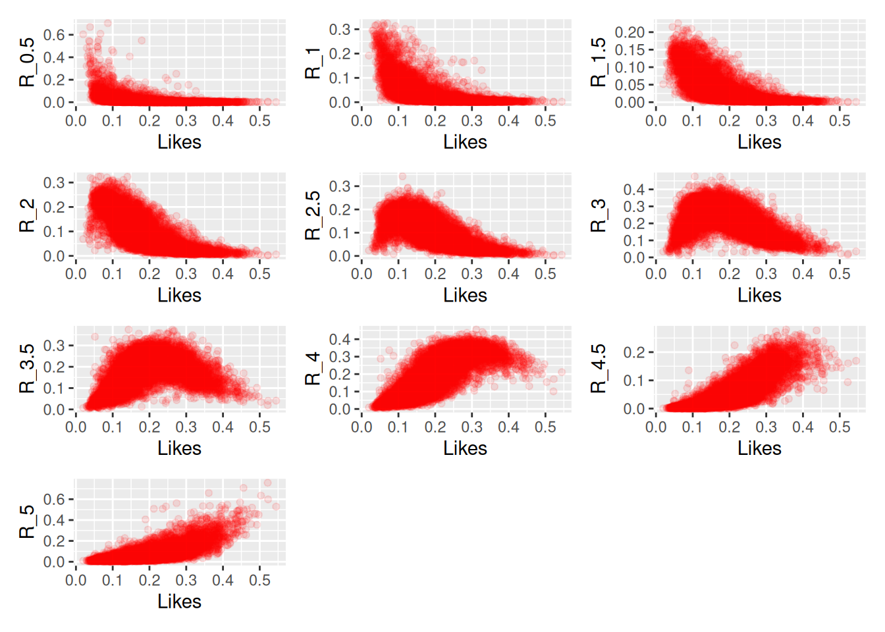
library(patchwork)
plots <- list()
counter <- 0
for (i in c("R_0.5","R_1","R_1.5","R_2","R_2.5","R_3","R_3.5","R_4","R_4.5","R_5"))
{
counter <- counter + 1
plots[[counter]] <- ggplot(letterboxd) +
aes(Total_ratings, .data[[i]]) +
geom_point(alpha = 0.1, color = "darkblue") +
labs(x = "Total Ratings")
}
wrap_plots(plots, ncol = 3)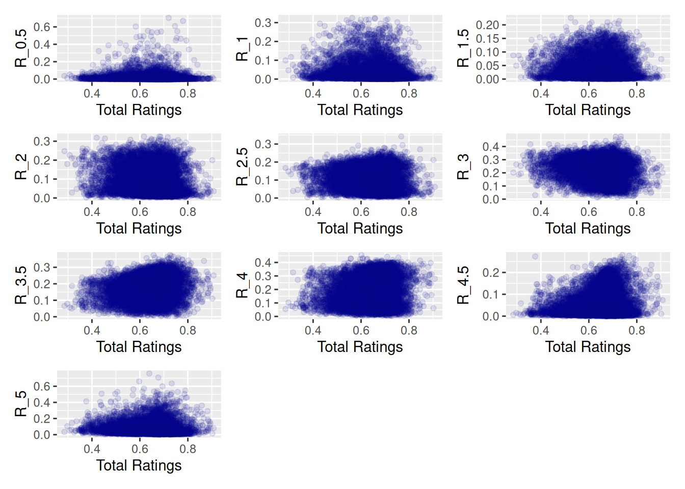
Conclusion
With this project we analysed the films and users’ behaviour on the Letterboxd. In Figure 1 we determined positive linear trend in length of films while Figure 2 showed number of films by length.
Figure 3 showed number of films by year and found a correlation with start of COVID and fall in the number of film released. Figure 4 showed growth of digital only films and decline of theatrical only releases. Figure 5 and Figure 6 showed popularity of genres across years. Figure 7 showed map of most produced genre of films in country. Figure 8 showed proportion of languages. Figure 9 showed negative linear trend of average ratings of films from big studious. Table 2, Figure 10 and Figure 11 enabled us to determine correlation between each rating and likes/total ratings. As a result of this project we saw a lot of insight in films’ trends, determined correlations between variables and found some tendency. Overall, the results of this analysis provide sufficient answers to the assignments set at the beginning.
References
Garanin, Simon. 2024. “Letterboxd (Movies Dataset).” https://www.kaggle.com/datasets/gsimonx37/letterboxd.
Ky13_38. 2025. “10,000 Movies + Letterboxd Data.” https://www.kaggle.com/datasets/ky1338/10000-movies-letterboxd-data.